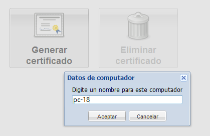
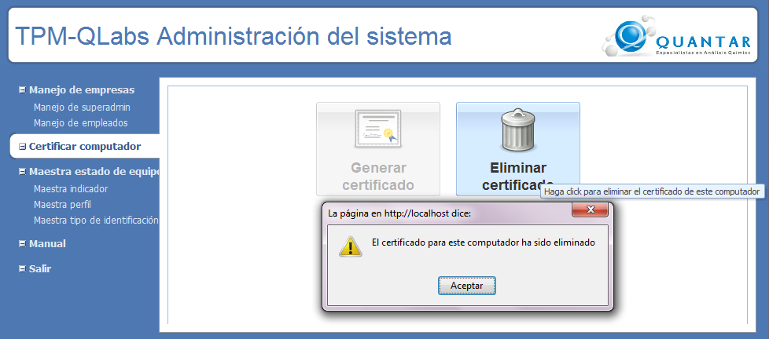

Generar certificado
Para generar un certificado el usuario debe pulsar el botón Generar certificado,
el sistema desplegara una ventana que pide el nombre del computador,
digite el nombre y pulse en el botón aceptar, luego el sistema
muestra un mensaje informando si se ha generado de manera
satisfactoria. La figura 2 muestra la pantalla que desplegará el
sistema para generar certificados.
Nombre de computador : El
nombre del computador debe identificar a cada computador y debe ser
diferente a los demas. utilice nombres como computador-1, computador-2,
o pc-1, pc-2.
Nota: Esta información sera necesaria para registrar los equipos o máquinas.

Figura 2. Pantalla de generación de certificado
Eliminar
Para eliminar el certificado generado en un computador, pulse el botón Eliminar certificado, el sistema desplegara un mensaje que informa si se ha eliminado con éxito el certificado.
Nota: Recuerde que si elimina
un certificado los equipos que tengan como central de registro este
computador no podrán acceder al sistema, y requerirán de un nuevo
certificado por parte del súper administrador.

Figura 3. Pantalla de eliminar certificados